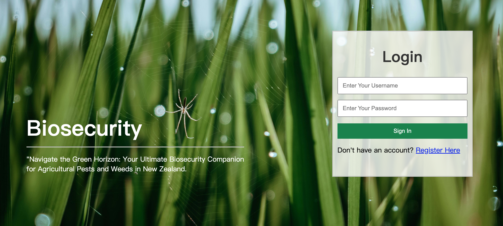

← Go Back
Built a biosecurity system detailing agricultural pests and weeds

The biosecurity system features user-friendly login and tailored dashboards for Agronomists, Staff, and Administrators, providing personalized access to relevant functions. With a responsive design and agricultural-themed styling, it ensures an intuitive user experience.
- Home Page: Welcoming interface providing access to key functionalities and navigation options.
- User Login and Registration: Efficient login and registration system allowing users to securely access the platform and create new accounts.
- User Roles and Access Control: Customized user roles with controlled access to specific features and functionalities, ensuring streamlined navigation and data security.